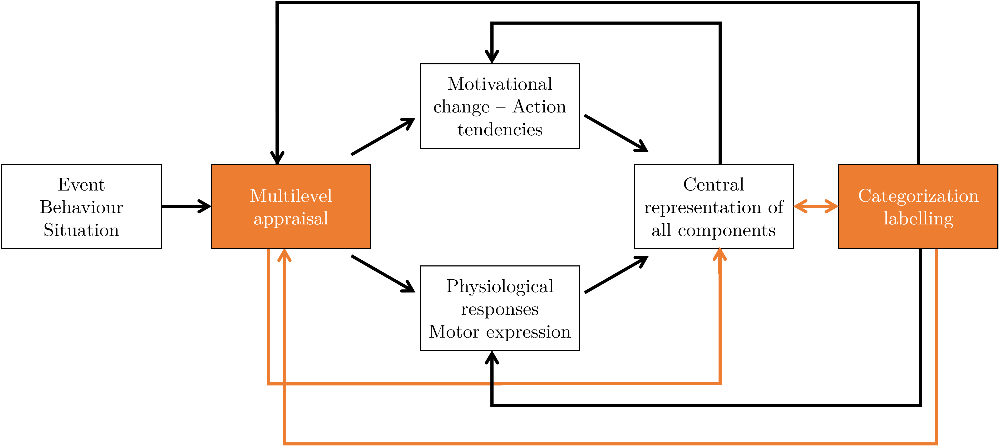
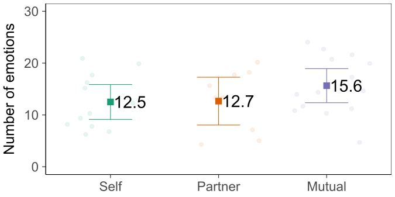
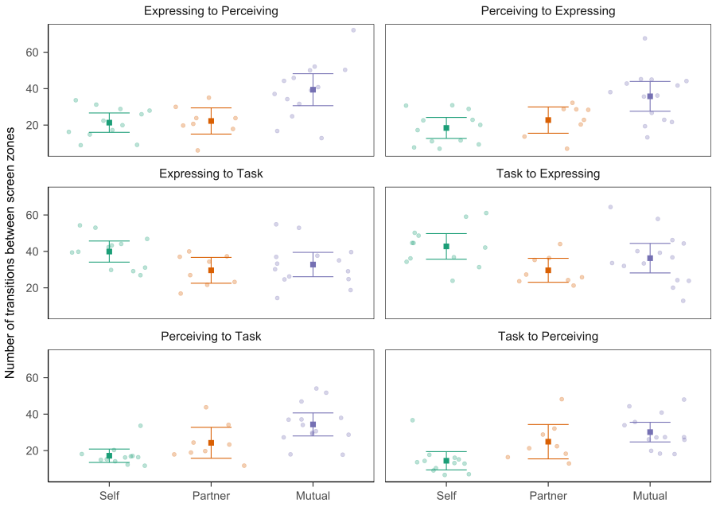

Implementation and Assessment of a Multipurpose Appraisal-Driven
Emotion Awareness Tool Based on Self-Report
With an Application to Computer-Mediated Learning
Environments
Mattia A. Fritz
TECFA, Université de Genève
The rise of affectivism
[...] given the undeniable impact of affective sciences on our
models of brain, mind, and behaviour, it seems relevant to ask today
whether we are now in the era of affectivism.
— Dukes et [63] al., 2021
In the Learning Sciences

-
The effects of learning on affect
D'Mello, 2013; Pekrun & Linnenbrink-Garcia, 2014; Reis et al., 2018 -
The effects of affect on learning
D’Mello et al., 2014; Harley et al., 2017; Rowe & Fitness, 2018; Ruiz et al., 2016 -
Socio-affective competences in learning
Brackett et al., 2019; Järvelä et al., 2016; Miller & Hadwin, 2015
Computer-Mediated Learning

Lack of para-verbal cues, which are normally available in
face-to-face interactions.
ICT
to capture, store, process, and/or visualize affect-related
information.
Endow computer-mediated learning environments with affect-related
information
beyond face-to-face.
Buder, 2011; Cernea & Kerren, 2015; Harley et al., 2017;
Janssen & Bodemer, 2013; Van Kleef, 2017
Why affect-related information?
-
Contributes to self-, co- and social-regulation
Järvelä et al., 2015; Lavoué et al., 2020; Miller & Hadwin, 2015 -
Sustains social presence
Jézégou, 2010; Kirschner et al., 2015; Lowenthal & Snelson, 2017 -
Improves partner- and mutual-modeling
Dillenbourg et al., 2016; Molinari et al., 2009; Sangin et al., 2011
Affect-related awareness

Stem from affective computing
Reactive or proactive intelligence
Tailor-made to ad hoc environments
Reactive or proactive intelligence
Tailor-made to ad hoc environments
Stem from
CMC and
CSCL
Bestow learners the locus of control
Knowledge, social, and affective information
Bestow learners the locus of control
Knowledge, social, and affective information
Thesis intertwined objectives
Iterative design to implement and assess an EAT to
-
Increase construct validity of Emotional Awareness
Theoretical: What is it? How can it be best conveyed? -
Provide a multipurpose, open-science oriented tool
HCI: How can researchers and practitioners adapt a core tool to their multiple needs? -
Investigate factors determining use and perception
Empirical: Why and under which conditions learners may take advantage of an EAT?
Design Empirical
Theory
Emotional awareness
Information about one’s own emotions and/or the emotions of
colleagues, which is instrumental to the learning task at hand
-
Benefits at the intra-personal level
Lavoué et al., 2020; Linnenbrink-Garcia et al., 2016; Molinari et al., 2016; Vogl et al., 2019 -
Benefits at the inter-personal level
Avry et al., 2020; Eligio et al., 2012; Molinari, Chanel, et al., 2013; Van Kleef, 2018 -
Strategic emotion signal encoding/decoding
Cernea & Kern, 2015; Derick, 2016; Feidakis et al., 2014; Leony, 2013
Functional abstract model

Numbers represent clusters of potential intervening factors (a)
intrinsic to the EAT; derived by the interactions between (b)
learner-EAT; (c) learner-learner; (d) learner-instructional
design.
Thesis overall hypothesis
Emotional awareness functions are best carried out if EAT
-
Is based on voluntary self-report
Boehner et al., 2007; Fontaine et al., 2013; Lavoué et al., 2020 -
Implements an appraisal-driven structure of emotion
Sander, 2013; Scherer, 2007, 2019, 2022 -
Allows moment-to-moment expression and perception
Buder et al., 2022; Miller & Hadwin, 2015
Appraisal-driven emotion

The dynamic architecture of the component process model. Adapted,
with minor labeling and graphical modifications, from the original
Figure 2.1.1 in Scherer (2010), p. 50.
Bi-directional probabilistic link
If one knows the results of an individual’s event
appraisal on major checks, one can
approximately predict what kind of emotion he or she will most
likely experience (or more precisely, what
label the person is likely to use to
refer to the experience)
— Scherer, 2009
And from the
label back to the appraisal
profile
Appraisal-driven awareness
The unit of emotional awareness in an EAT is
-
A cognitive evaluation on a set of relevant criteria
Reflecting (on) emotion elicitation and differentiation -
A lexicalized emotion
Reflecting (on) the subjective feeling with a symbolic (shared) expression
Proof of Concept
Dynamic Emotion Wheel
Studies
Studies overview
-
S1 Randomized controlled trial
Different access to and use of emotional awareness in synch./collab. -
S2 Longitudinal quasi-experimental plan
Use and perception over time in a blended course over a few weeks in asynch./indiv. -
S3 Secondary data analysis or internal meta-analysis
Data-driven assessment of the EAT using S1 and S2 data
S1 Rationale
-
Work with dyads used awareness vs. no awareness
Avry, 2020; Eligio et al., 2012; Molinari, Chanel et al., 2013 -
Awareness consistent with full mutual-modeling
Both learners disposed of symmetric emotional information (Dillenbourg et al., 2016) - But full model can be broken down


S1 Question and hypotheses
Q: Does a different use of, and access to emotional information determine the use of an EAT in synchronous and collaborative computer-mediated settings?
H: The more socially oriented the EAT (Mutual >
Partner > Self), the more it will be used to
-
Express emotions
Number of emotions expressed through the EAT (DV1) -
Peruse emotions
Information seeking (DV2) and information processing (DV3) with eye-tracking measures
S1 Method

N = 48 students and professionals (29 women, 19 men), aged 18 to
55 (M = 37.3, SD = 10.0)
S1 Experimental plan

S1 Emotion expression
N = 35, M = 13.8 (5.7) expressed emotions
Self M = 12.5 (5.3) | Partner M = 12.7 (6.0) | Mutual M = 15.6 (5.7)

Self M = 12.5 (5.3) | Partner M = 12.7 (6.0) | Mutual M = 15.6 (5.7)
`$F(2, 32) = 1.25$, $p = .300$, $\hat{\eta}^2_G = .07$, 90% CI
$[.00, .22]$`
| contrast | estimate | p.value |
|---|---|---|
| Self - Partner | -0.17 [-6.28, 5.95] | 1.00 |
| Self - Mutual | -3.14 [-8.60, 2.31] | 0.34 |
| Partner - Mutual | -2.98 [-8.90, 2.95] | 0.44 |
S1 Information seeking
N = 35, M = 67.3 (34.9) visits in perceiving AOI
Self M = 40.9 (16.8) | Partner M = 75.4 (47.3) | Mutual M = 84.6 (23.8)
Self M = 40.9 (16.8) | Partner M = 75.4 (47.3) | Mutual M = 84.6 (23.8)

`$F(2, 32) = 7.42$, $p = .002$, $\hat{\eta}^2_G = .317$, 90% CI
$[.09, .49]$`
| contrast | estimate | p.value |
|---|---|---|
| Self - Partner | -34.53 [-66.80, -2.26] | 0.03 |
| Self - Mutual | -43.73 [-72.51, -14.94] | < 0.01 |
| Partner - Mutual | -9.20 [-40.46, 22.07] | 0.75 |
S1 Information processing
N = 35, M = 51.4 (32.5) seconds looking at perceiving AOI
Self M = 28.2 (17.2) | Partner M = 68.5 (39.8) | Mutual M = 60.1 (27.7)
Self M = 28.2 (17.2) | Partner M = 68.5 (39.8) | Mutual M = 60.1 (27.7)

`$F(2, 32) = 6.24$, $p = .005$, $\hat{\eta}^2_G = .281$, 90% CI
$[.064, .457]$`
| contrast | estimate | p.value |
|---|---|---|
| Self - Partner | -40.20 [-71.03, -9.37] | 0.01 |
| Self - Mutual | -31.81 [-59.31, -4.31] | 0.02 |
| Partner - Mutual | 8.39 [-21.47, 38.26] | 0.77 |
S1 Transitions between AOI

| contrast | transition | estimate | p.value |
|---|---|---|---|
| Self - Partner | Expressing to Perceiving | -0.92 | 0.98 |
| Self - Mutual | Expressing to Perceiving | -18.10 | < 0.01 |
| Partner - Mutual | Expressing to Perceiving | -17.18 | < 0.01 |
| Self - Partner | Perceiving to Expressing | -4.33 | 0.65 |
| Self - Mutual | Perceiving to Expressing | -17.37 | < 0.01 |
| Partner - Mutual | Perceiving to Expressing | -13.04 | 0.02 |
| Self - Partner | Expressing to Task | 10.29 | 0.09 |
| Self - Mutual | Expressing to Task | 7.13 | 0.21 |
| Partner - Mutual | Expressing to Task | -3.16 | 0.78 |
| Self - Partner | Task to Expressing | 13.12 | 0.02 |
| Self - Mutual | Task to Expressing | 6.46 | 0.28 |
| Partner - Mutual | Task to Expressing | -6.66 | 0.34 |
| Self - Partner | Perceiving to Task | -7.08 | 0.32 |
| Self - Mutual | Perceiving to Task | -17.19 | < 0.01 |
| Partner - Mutual | Perceiving to Task | -10.11 | 0.09 |
| Self - Partner | Task to Perceiving | -10.46 | 0.09 |
| Self - Mutual | Task to Perceiving | -15.73 | < 0.01 |
| Partner - Mutual | Task to Perceiving | -5.27 | 0.51 |
S1 Discussion
-
Trends favour use in inter-personal interfaces
More expression, seeking, processing, and emotion as information transitions (Van Kleef, 2018) -
... but also potential for intra-personal benefits
A pure individual, non-collaborative condition would be interesting (Torre & Liebermann, 2018) -
Simulated collaboration limits representativeness
Timer and task compliance can inflate use of the EAT -
Interest for using the EAT as experimental factor
Opens up potential in comparing type of awareness depending on context.
S2 Rationale
S2 Research questions
Exploratory analysis in a longitudinal settings about the
-
Use of the EAT over time
Is the EAT adopted in the first place? And does its use evolve over time? -
Perception of usefulness over time
Does it change over time depending on different functions of emotional awareness? -
Comparison between two different classes
Use and perception depend mainly on individuals or are there also interaction cues?
Conclusion
Thank you for your attention !
Presentation created with
Reveal.js.